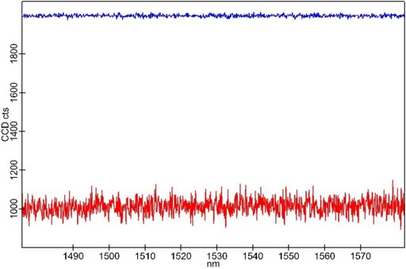
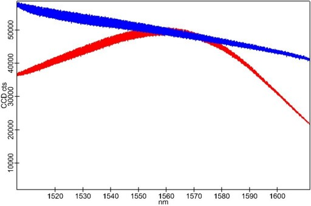
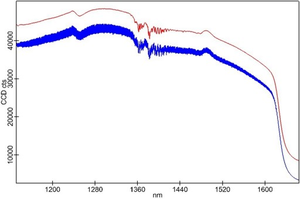
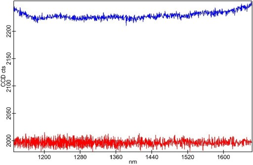

|
InGaAs相机
|
对于在近红外（NIR）区域记录光谱，InGaAs阵列探测器是最佳选择。根据元素比例，材料的带隙可以调整。通常传感器在高达1.7µm或扩展范围高达2.2µm的范围内敏感。硅基传感器在近红外区域，尤其是1000 nm以上，灵敏度较差。
硅基CCD和InGaAs阵列之间的一个显著区别在于读出方式的差异。在CCD中，每行电荷被移位至一个读出寄存器，然后逐像素移位至放大器和A/D转换器。由于每个像素以相同方式处理，所得数据具有高度均匀性。InGaAs阵列是一种主动像素传感器（APS），类似于CMOS传感器，每个像素拥有自己的电子元件。有些阵列甚至用不同的电子元件处理奇偶像素。这会导致一些需要考虑的影响：
因此，必须对原始数据进行校正。WITec Control中提供三种校正程序。
强烈建议至少进行偏移量和暗电流校正。
偏移量校准
每个像素的偏移量通过使用最短积分时间且无光照在探测器上时确定。记录的平均光谱然后从所有测量光谱中减去，并加上2000的偏移量（见图1）。

图1：未校正（红色）和已校正（蓝色）偏移量的单光谱。
强度校正
为了校准每个像素的增益，需要一个具有平滑分布的光谱（见图2）。

图2：使用600 g/mm@1560nm光栅的LED（红色）和钨卤素灯（蓝色）光谱。
对于强度校正，建议使用高刻线密度光栅（例如600 g/mm@1560nm）配合大灯丝钨卤素灯，以获得平滑光谱。如果使用较宽的光谱范围，由于水和其他气体的光吸收，光谱不再平滑，不能用于增益强度校准。使用小钨丝灯可能会在光谱中产生振荡。

图3：有（红色）和无（蓝色）强度校准的钨卤素灯光谱
暗电流校正
背景信号来自探测器的暗电流以及周围环境（场景）的热辐射。如果探测器和场景温度恒定，每个像素具有独立但恒定的暗信号速率。测量信号与积分时间成正比。

图4：无（蓝色）和有（红色）暗电流校正的单光谱（0.5 s积分时间）。
光谱拼接
可以进行光谱拼接，但拼接光谱中可能出现伪影。
更多信息：